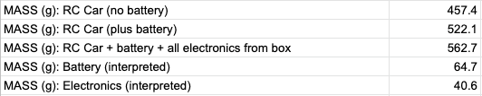
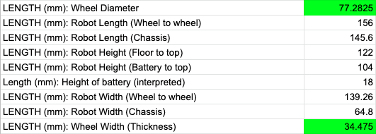
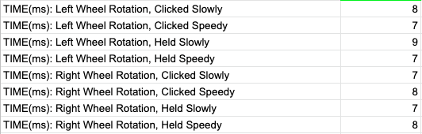
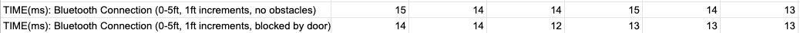
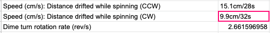
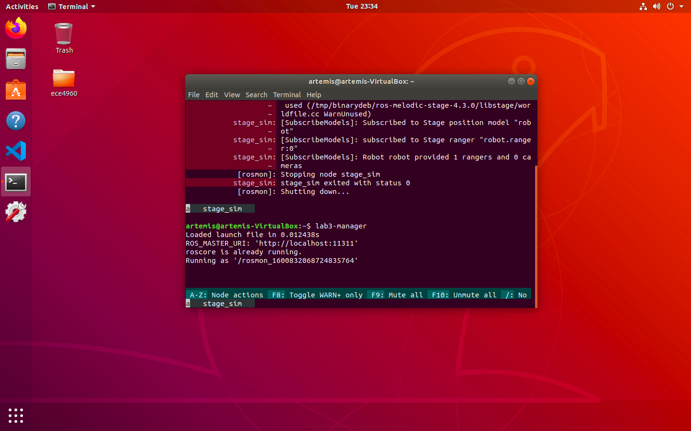
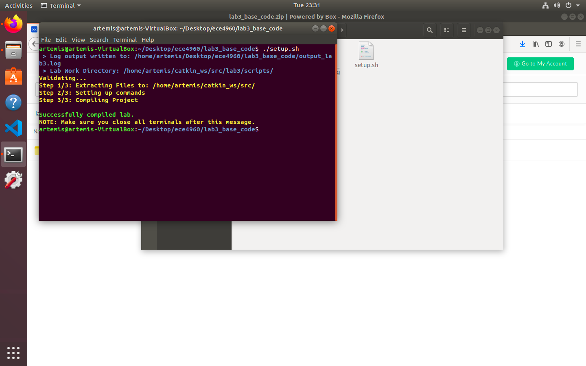

Lab 3
Characterizing Your Robot
Before we start taking the car apart, we needed to familiarize ourselves with the hardware being utilized. This was relatively open-ended and relied on us compiling datapoints to get a more robust view of the RC car. This lab was done in collaboration with Greg Kaiser.
We started with passive measurements, namely mass and length. The recorded mass measurements can be found in the table below, divided into readings for the chassis, the battery, and additional electronics.
There were many components of the car to measure the length of, all of which are recorded in the table below. This includes the lengths, heights, and widths of the chassis, batteries, and wheels. Note, the measurements in green were the average of 5 measurements.
The first focus of our active measurements was the rotational speed of the wheels. With the controller having settings for “speedy” and “slow” movement, we wanted to characterize what that actually meant in terms of speed. We also weren’t sure as to whether these buttons needed to be held during the motion in question, or could be clicked briefly before moving the joysticks.
This experiment was conducted by taping a point on each of the wheels, filming the rotation for each pair, and going frame by frame in the footage to see how long it took for each wheel to complete a rotation. The conclusion of our findings was that the rotational speed of the wheels doesn’t vary by much, but isn’t even across the two pairs of wheels (though each wheel in a pair does have almost identical movement).
Next was stress-testing the bluetooth connection between the robot and the controller. The procedure for testing this was turning the robot on, then placing a certain amount of distance between the controller and the robot (with and without an obstacle directly in the way) before clicking the button to turn the controller on. The controller was filmed to see the time difference between the button press and the first frame that the LED turned a solid red, implying connection with the robot.
The findings are in the table below. A larger sample size of distances would lead to more conclusive results, but it’s clear that the existence of an obstacle (in this case, a door) impacted the time to connect slightly. The hypothesis for distance was that the time to connect would increase with distance, but this wasn’t the case; instead, it reinforced the unpredictability of bluetooth connection.
Data regarding the consequences of tight spins by the robot is shown in the table below. The drift of the wheels while spinning clockwise had a percent difference of 41.6% versus counterclockwise.
The car itself is very nimble, able to make tight turns relatively quickly. Some tricks we were able to exhibit were somersaults, spinning in place, and moving only on two wheels. Somersaulting was achieved by going abruptly from max speed in one direction to max speed in the opposite direction. The robot was able to spin in place by holding the joysticks individually in opposite directions. Moving while only on a pair of wheels wasn’t a trick that could be done by controls alone, but required the robot to ram into an object with enough force to propel it onto its side, after which the wheels were large enough to still be able to move. These movements were less precise, as would be expected, and resulted in large turning radii, even when moving straight.
Not only will we be working with a physical robot, but with a virtual counterpart. This lab involved taking a look at the simulation and the tools used to interact with it.
For once my VM decided to respond as expected to downloading and running software tools! Installing the software dependencies and running the setup bash script went very smoothly, as shown by the screenshots below.
 Below is a video showing interactions between the simulation (right) and the keyboard teleoperation tool (left). The initial values for the linear and angular speeds of the robot were printed to the terminal, equal to 0.1 and 0.3 respectively. Something to note is that the virtual robot is a little slow to respond, exacerbated by the fact that the robot isn’t a tangible object whose movements can be recorded in real life.
In the video, I pressed the w key to increase the linear speed by 10% and the c key to decrease the angular speed by 10%. After adjusting the speeds, I started to explore the environment using the motion keys. I was able to “kidnap” the robot when stationary (as shown in the screenshot) and while in motion. Once the robot had been “kidnapped” (clicked and dragged by the mouse), pressing o showed frames of previous states of motion. If the robot knocked into an obstacle during any point of this motion, it disappeared and was replaced by an immovable warning symbol.
The tangible robot is an exciting prospect to work with, since there are a lot of potential possibilities with regards to its motion and instability. The virtual robot is an interesting place to try out theories before working them into fruition on the car. Putting these datapoints, along with those of the class, together will help in the future when weighing the pros and cons of design decisions.